Graph |
Map |
Physics |
Image |
 |
 |
 |
 |

extensions [ graph ]
|
|
| 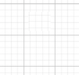 |
;; GRAPH graph:show-graph [ top left width height ] graph:hide-graph graph:import-file filename graph:export-file graph:set-data <a string of json> show graph:get-data ;; <a string of json> |
| 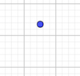 |
;; POINTS graph:create-point "point-1" [ 0 0 ] graph:create-points [ [ "point-1" [ 0 2 ] ] [ "point-2" [ 0 0 ] ] ] show graph:get-points ;; [ [ "point-1" [ 0 2 ] ] [ "point-2" [ 0 0 ] ] ] graph:set-x "point-1" 0 graph:set-y "point-1" 2 graph:set-xy "point-1" [ 0 2 ] show graph:get-x "point-1" ;; returns 0 show graph:get-y "point-1" ;; returns 2 show graph:get-xy "point-1" ;; returns [ 0 2 ] |
| 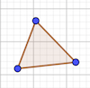 |
;; OBJECTS (Including Points) show graph:get-objects ;; returns list of names and definitions of objects, in order of creation graph:create-objects [ [ "my-point" "(0, 0)"] [ "my-triangle" "Polygon(F, G, H)")"] ] show graph:get-object "triangle-1" ;; returns getCommandString (non-points) or getValueString (points) graph:create-object [ "my-point" "(0, 0)"] show graph:get-value "triangle-1" ;; returns getValue show graph:get-object-type "triangle-1" ;; returns type show graph:exists "triangle-1" ;; returns boolean graph:rename-object "triangle-1" "triangle-2" graph:delete-object "triangle-1" graph:hide-object "triangle-1" graph:show-object "triangle-1" |
show graph:graph-to-patch [ 0 0 ] ;; returns graph coordinates show graph:patch-to-graph [ 0 0 ] ;; returns patch coordinates
graph:eval-command geogebra-command show graph:eval-reporter geogebra-command ;; returns a value
|
1. Linear Regression
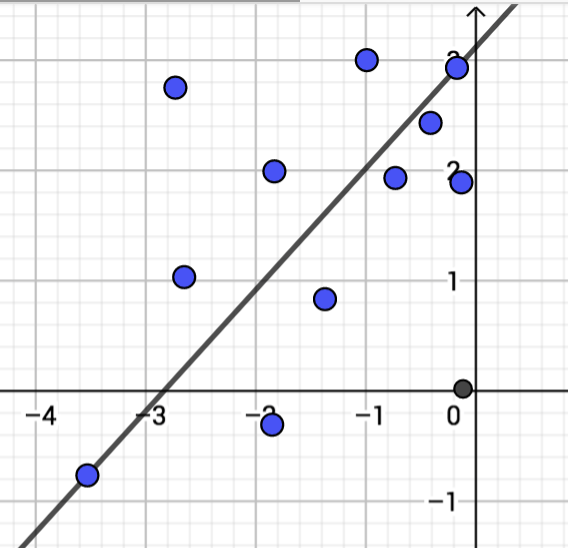 |
extensions [ graph ] graph:create-graph ;; Save current state of points. set saved-graph graph:get-points ;; returns points ;; Grab points from someone else. set new-points gbcc:get-from-user "my-points" ;; returns points ;; Add points in to your environment. graph:create-points new-points ;; Something about including new points to linear regression. |
|
2. Same Area
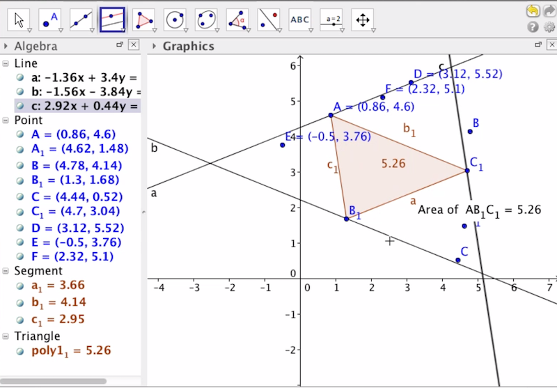 |
extensions [ graph ] graph:create-graph ;; Save current state of points. set saved-graph graph:get-points ;; returns points ;; Grab points from someone else. set new-points gbcc:get-from-user "my-points" ;; returns points ;; Add points in to your environment. graph:create-points new-points |
|
3. Same Perimeter
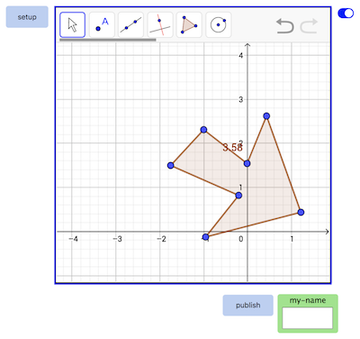 |
extensions [ graph ] graph:create-graph ;; Save current state of environment, locally. set saved-xml graph:export ;; Grab xml from someone else, by clicking on gallery. set new-xml gbcc:get-from-user "my-xml" ;; Replace old environment with new environment. graph:import new-xml ;; Change environment with Gui ;; Save new environment, where other users can access it. gbcc:set "my-xml" graph:export ;; Share screenshot. gbcc:broadcast-view"" |
|
4. Operations on Functions
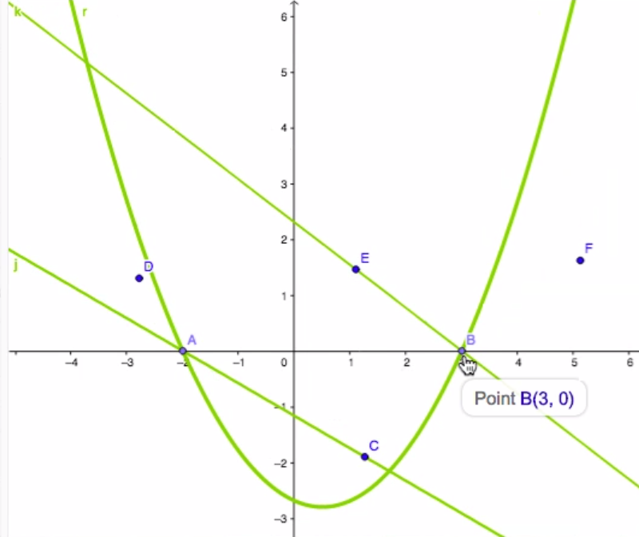 |
extensions [ graph ] graph:create-graph ;; Save objects, locally. set saved-objects graph:get-objects ;; Grab objects from someone else, by clicking on gallery. set new-objects gbcc:get-from-user user-id "my-objects" ;; Add new objects. graph:create-objects new-objects ;; Change environment with Gui ;; Save new environment, where other users can access it. gbcc:set "my-objects" graph:get-objects ;; Share screenshot. gbcc:broadcast-view"" |
|
5. Triangle Animation Ants
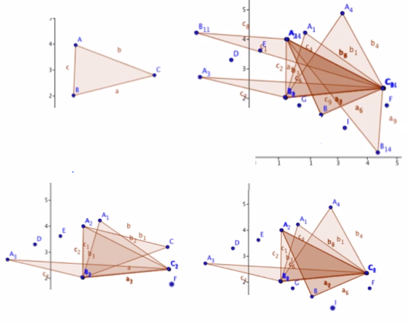 |
extensions [ graph ] graph:create-graph ;; Create a turtle that controls a point. create-turtles 1 [ set user-name (word "carolyn" who) graph:create-point user-name [ graph:patch-to-graph [ xcor ycor ] ] set my-turtle-id who ] ;; Connect your point to the two other endpoints, to form a triangle. graph:eval-command... ;; Move the turtle around, and watch the triangle change, too. ask turtle my-turtle-id [ graph:set-xy user-name [ graph:patch-to-graph [] xcor ycor ] ] ] ;; Get data from others. ;; to gbcc-on-select [ user-id ] [ ;;create turtle and point and programatically make triangle...] ;; to gbcc-on-deselect [ user-id ] [ ;;remove turtle and point...] ;; to gbcc-on-forever-go [ user-id ] [ ;;move turtle and point ] ;; Version 1: Share each step, with others. ;; Version 2: Share each stamp, with others. ;; Version 3: Teacher saves stamps, replays action. |

extensions [ graph ]
|
|
| 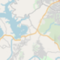 |
;; MAP maps:show-map [ top left width height ] maps:hide-map maps:import-file filename maps:export-file maps:set-data <a string of json> show maps:get-data ;; <a string of json> |
;; MAP SETTINGS maps:set-zoom 3 show maps:get-zoom ;; returns 3 maps:set-center-latlng [ 30 97 ] show maps:get-center-latlng ;; returns [ 30 97 ] |
|
| 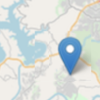 |
;; MARKERS maps:create-marker "marker-1" [ 0 0 ] maps:create-markers [ [ "marker-1" [ 0 0 ] ] [ "marker-2"[ 0 0 ] ] ] show maps:get-markers ;; [ [ "marker-1" [ 0 0 ] ] [ "marker-2" [ 0 0 ] ] ] maps:delete-marker "marker-1" maps:set-lat "marker-1" 30 maps:set-lng "marker-1" 97 maps:set-latlng "marker-1" [ 30 97 ] maps:set-label "point-1" "cat's marker-1" show maps:get-lat "marker-1" ;; returns 30 show maps:get-lng "marker-1" ;; returns 97 show maps:get-latlng "marker-1" ;; returns [ 30 97 ] show maps:get-label "marker-1" ;; returns "cat's point-1" |
show maps:latlng-to-patch [ 30 -97 ] ;; returns latitude and longitude show maps:patch-to-latlng [ 0 0 ] ;; returns patch coordinates

| 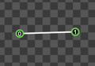 |
A line has two endpoints and is a member of a body. A line has friction, density and restitution. A line can be defined with an absolute position, or with a position relative to a body. |
| 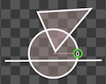 |
A circle has a center and a radius and is a member of a body. A circle has friction, density and restitution. A circle can be defined with an absolute position, or with a position relative to a body. |
| 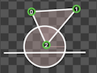 |
A polygon has vertices and is a member of a body. A polygon has friction, density and restitution. A polygon can be defined with an absolute position, or with a position relative to a body. |
| 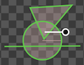 |
A body can be comprised of shapes such as lines, circles and polygons. A body can be rotated around it's center. A body has linear and angular velocity. A body is defined with an absolute position. Bodies can be dynamic (move and collide) or be static (only collide) or be a ghosts (only move). |
| 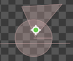 |
A target is a location on a body, to which forces can be applied. |
extensions [ physics ]
|
|
;; WORLD physics:show-world [ top left width height ] physics:hide-world physics:import-file filename physics:export-file physics:set-data <a string of json> show physics:get-data ;; <a string of json> |
|
;; WORLD SETTINGS physics:set-gravityxy [ false true ] show physics:get-gravityxy ;; returns [ false true ] physics:set-wrapxy [ true true ] ;; show physics:get-wrapxy ;; returns [ true true ] physics:set-time-step 1 / 20 ;; length of time passed to simulate (seconds) show physics:get-time-step ;; returns 1 / 20 physics:set-velocity-iterations 8 / 20 ;; how strongly to correct velocity show physics:get-velocity-iterations ;; returns 8 physics:set-position-iterations 31 / 20 ;; how strongly to correct position show physics:get-position-iterations ;; returns 3 |
|
;; OBJECTS ;; Note: Each line, circle, polygon and target must belong to a body physics:create-line "line-1" "body-1" physics:create-circle "circle-1" "body-1" physics:create-polygon "polygon-1" "body-1" physics:create-target "target-1" "body-1" physics:delete-line "line-1" physics:delete-circle "circle-1" physics:delete-polygon "polygon-1" physics:delete-target "target-1" |
|
;; CLICK OBJECT BELOW
;; SET LINE DATA physics:set-line-body-id "line-1" "body-2" ;; name of line, one body it is attached to physics:set-line-relative-endpoints "line-1" [ 0 0 ] [ 2 2 ] ;; name of line, coords of endpoints relative to center of mass of body physics:set-line-endpoints "line-1" [ 10 10 ] [ 5 5 ] ;; name of line, absolute coords of endpoints physics:set-line-friction "line-1" 0.5 ;; name of line, number between 0 and 1 (from no friction to a lot of friction) physics:set-line-density "line-1" 0.5 ;; name of line, number between 0 and 1 (from not dense to very dense physics:set-line-restitution "line-1" 0.5 ;; name of line, number between 0 and 1 (from not bouncy to very bouncy) ;; SET CIRCLE DATA physics:set-circle-body-id "circle-1" "body-2" ;; name of cirle, one body it is attached to physics:set-circle-radius "circle-1" 4 ;; name of circle, radius physics:set-circle-relative-center "circle-1" [ 0 0 ] ;; name of circle, coords of center of circle, relative to center of mass of body physics:set-circle-center "circle-1" [ 10 10 ] ;; name of circle, absolute coords of center of circle physics:set-circle-friction "circle-1" 0.5 ;; name of circlee, number between 0 and 1 (from no friction to a lot of friction) physics:set-circle-density "circle-1" 0.5 ;; name of circle, number between 0 and 1 (from not dense to very dense physics:set-circle-restitution "circle-1" 0.5 ;; name of circle, number between 0 and 1 (from not bouncy to very bouncy) ;; SET POLYGON DATA physics:set-polygon-body-id "polygon-1" "body-2" ;; name of polygon, one body it is attached to physics:set-polygon-relative-vertices "polygon-1" [ 0 0 ] [ 2 2 ] ;; name of line, coords of vertices for concave polygon, in clockwise order, relative to center of mass of body physics:set-polygon-vertices "polygon-1" [ 10 10 ] [ 5 5 ] [ 5 10] ;; name of line, absolute coords of vertices for concave polygon, in clockwise order physics:set-polygon-friction "polygon-1" 0.5 ;; name of polygon, number between 0 and 1 (from no friction to a lot of friction) physics:set-polygon-density "polygon-1" 0.5 ;; name of polygon, number between 0 and 1 (from not dense to very dense physics:set-polygon-restitution "polygon-1" 0.5 ;; name of polygon, number between 0 and 1 (from not bouncy to very bouncy) ;; SET BODY DATA physics:set-body-behavior "body-1" "dynamic" ;; static (doesn't move, does collide), dynamic (does move and collide), ghost (does move, doesn't collide) physics:set-body-coords "body-1" [ 0 0 ] physics:set-body-angle "body-1" 180 ;; degrees physics:set-body-linear-velocity "body-1" [ 0 0 ] ;; vector physics:set-body-angular-velocity "body-1" 180 ;; angle in degrees ;; SET TARGET DATA physics:set-target-body-id "target-1" "body-2" ;; name of target, one body it is attached to physics:set-target-relative-coords "target-1" [ 0 0 ] ;; name of target, coords relative to center of mass of body physics:set-target-coords "target-1" [ 10 10 ] ;; name of target, absolute coords |
|
;; APPLY FORCE AT TARGET physics:apply-force "target-1" 10 180 ;; applies with force of 10 and angle of 180 degrees physics:apply-force-relative-angle "target-1" 10 20 ;; applies with force of 10 and relative angle of 20 degrees physics:apply-linear-impulse "target-1" 10 180 ;; applies with force of 10 and angle of 180 degrees physics:apply-linear-impulse-relative-angle "target-1" 10 20 ;; applies with force of 10 and relative angle of 20 degrees physics:apply-torque "target-1" 10 ;; applies with force of 10 physics:apply-angular-impulse "target-1" 10 ;; applies with force of 10 |
physics:connect-who-to-object who object-id physics:disconnect-who who
|
1. Apply a force to each bristlebot
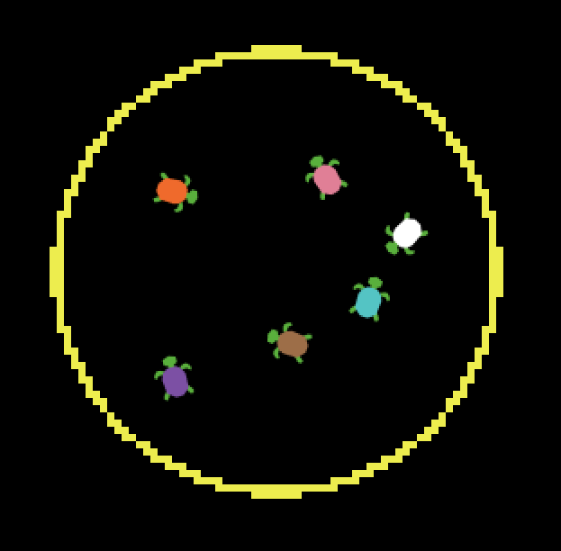 |
extensions [ physics ] create-turtles 6 [ set shape "turtle" ;; create a circle, and make it belong to a body physics:create-circle (word "circle- who) (word "body-" who ) physics:set-circle-xy (word "circle-" who) [ xcor ycor ] physics:set-radius (word "circle-" who) 2 ;; place the body, somewhere, otherwise it defaults at [ 0 0 ] physics:set-body-xy ("body-1" [ 4 4 ] ;; create a target at the center of a body physics:create-target (word "target-" who) (word "body-" who) physics:set-target-relative-xy (word "target-" who) [ 0 0 ] ;; connect the turtle to the body to which the circle and target belong physics:connect-who-to-object who (word "body-" who ) ] ask turtles [ ;; apply a force of 10, to a target on a body, at a relative angle of 90 degrees physics:apply-force-relative-angle (word "target-" who) 10 90 ] |
|
2. Apply a linear force (white arrow)
to a Pokemon card 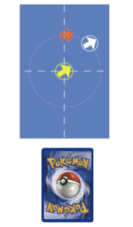 |
extensions [ physics ] ;; create a polygon, and make it belong to a body physics:create-polygon "rectangle-1" "body-1" physics:set-polygon-vertices [ [ 0 0 ] [ -4 0 ] [ -4 4 ] [ 0 4 ] ] ;; create a rectanglular turtle and connect it to the body create-turtles 1 [ set shape "rectangle" physics:connect-who-to-object who body-1 ] ;; create a target, offset from the center of a body physics:create-target "target-white" "body-1" physics:set-target-relative-xy "target-white" [ 2 2 ] ;; create an arrow shaped turtle and connect it to the target create-turtles 1 [ set shape "arrow" physics:connect-who-to-object who "target-white" ] ;; apply a force of 10, to a target on a body, at a relative angle of 35 degrees physics:apply-force-relative-angle "target-white" 10 35 |
|
3. Apply a linear force (yellow arrow)
and an angular force (red arrow) 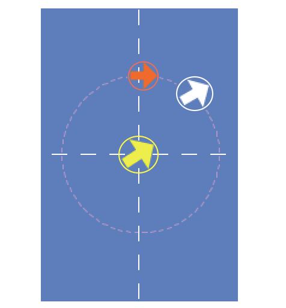 |
;; apply a linear impulse of 12, at a relative angle of -30 degrees physics:apply-linear-impulse-relative-angle "target-yellow" 12 -30 ;; apply an angular impulse of 20 physics:apply-angular-impulse "target-red" 10 |
|
4. In ideas 2 and 3, above,
something else needs to be happening to make two touch become one touch. |

extensions [ image ]
image:import "cats.png" image:clear image:zoom 3 ;; zooms so that there are 3 patches from an edge to the center patch image:reset-zoom